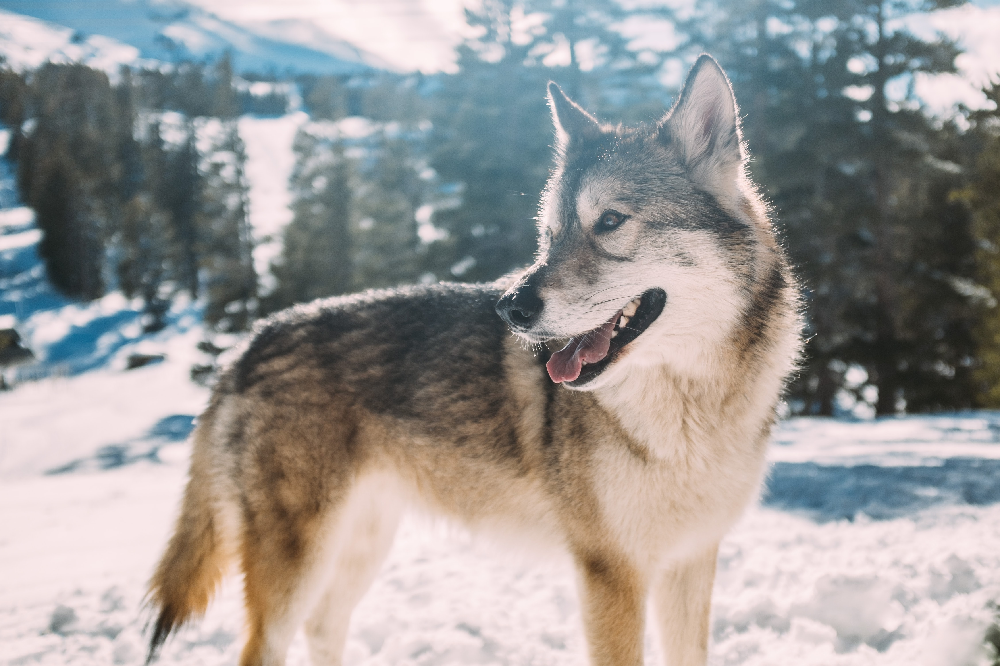

Loving, intelligent, loyal, active, protective, willing these pack pups may do better in pairs. They love to hunt small game and are very energetic. These pups maybe a good fit for an active person who would love a jogging companion. These pups don't do well in small confined places therefore if you live in an apartment these pups may not be best suited for you.
The Seppala is a medium sized dog that gets to be 21 in. – 25 in. in height (male) or 19 in. – 22 in. (female). The Seppala tends to weigh around 40-60 pounds (male) or 31-53 pounds (female).
The Seppala Siberian Sleddog was at one time the same breed as the Siberian Husky. It was always the working lines of the breed and was never used in the show ring. As the show ring dogs evolved more for their beauty and less for sled pulling, the Seppala Siberian Sleddog remained a true working dog. The bloodlines were kept separate from the show dogs. In the late 1990s, the breed was recognized by the Canadian agriculture authorities as a new breed. In 2002 the Seppala Siberian Sleddog lines spread to the USA as breeders worked on keeping the working lines separated from the show lines.
Resources: Seppala Siberian
101 Dog Breeds - Seppala Siberian
© 2020 All rights reserved.